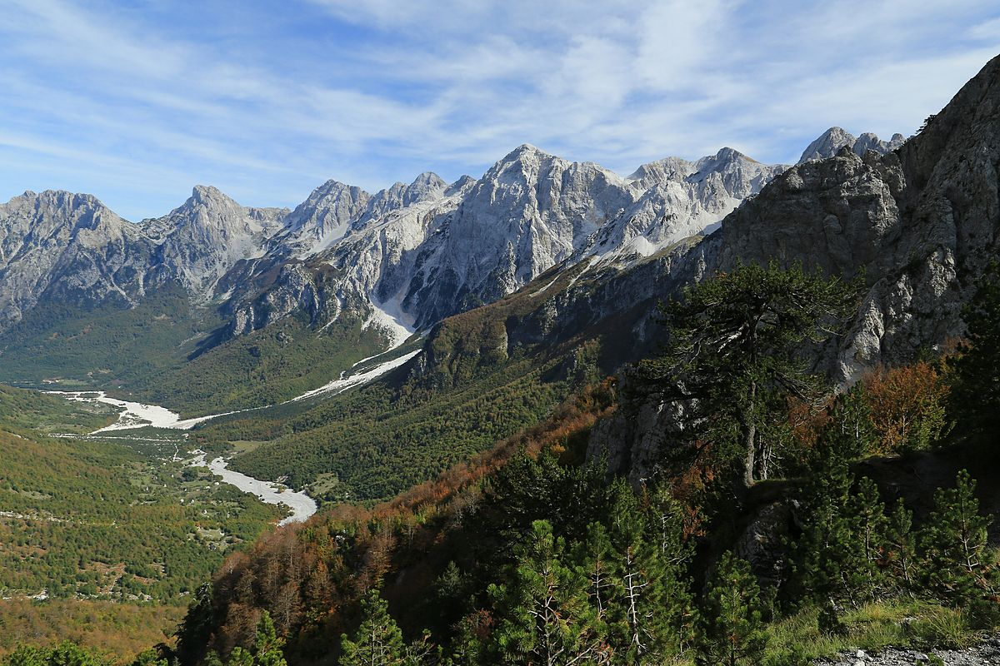
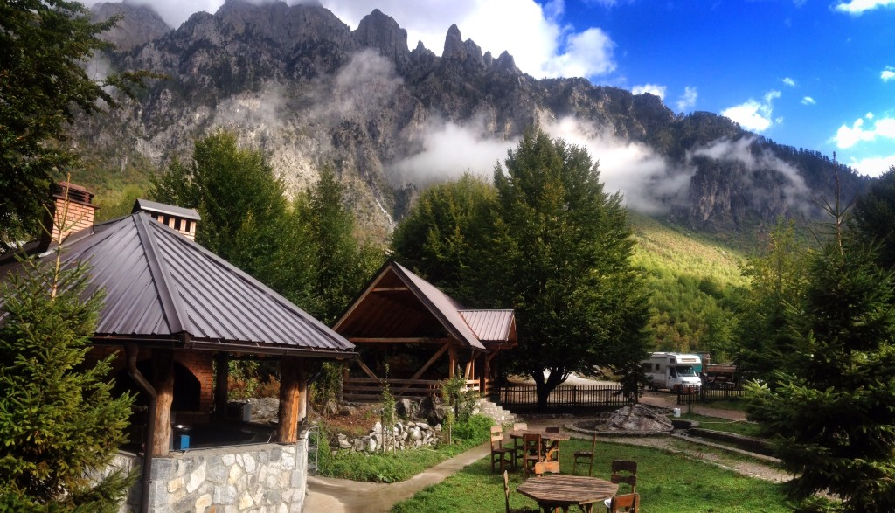
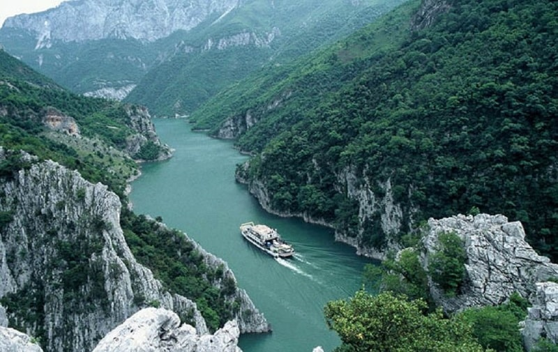

Valbona is a village located in the Kukës County, in Northern Albania. It is a part of the ex-county Margegaj and is situated in the valley of the Valbona River, south of the Maja e Thatë mountain. Afer the local goverment reform in 2015, it became part of the Tropoja county. As one of the main residual locations of the Valbona Valley National Park, it offers appropriate accomodation for visitors and tourists, mainly in traditional alpine cabins or taverns.
The big name of Valbona, currently includes about 37 houses with only 300 inhabitants. The village is located in a semi-steep gorge, by the river of the same name, between the mountain of Kollata, the mountain opposite Jezerca and Pecmara, at an altitude of 810 meters above sea level. The well-known village has its roots in the Albanian village of Vuthaj, which today is located in Montenegro. The 78-year-old Muhamet Selimi shows that the roots of the village are at least over 400 years old. At that time, the inhabitants of this village had summer stalls for livestock in this gorge. One of their grandchildren (from the girl) who had been orphaned at the age of 4 months, after growing up and getting married, wanted to stay at least rented in summer camps even during the winter. Why so? Because according to the Kanun (even today) the nephew (from the daughter, daughter of the village) has no share in the village, as only the nephew in the male line can have a share. But, staying there for several years, the grandson also had children, they grew up and got married, so much so that this family multiplied, her suckers refused to leave anymore, the problem went to trial. The nephew who had been left from the village to live in the stables, to take care of them, had died. The judges of the time to solve the problem asked to go to Valbona and according to the laws of the time if the chimneys of the houses emitted smoke, the land belonged to them. On the contrary it belonged to the Vuthaj. In court (it is not known who taught the Valbonas (more precisely the ancestors of today's Selimaj tribe), but when the judges went they saw that every house was emitting smoke, this forced them to give the verdict, that the land belonged to them. 300 years ago, this is how the village of Valbona was born.
Valbona Valley lies in the center of the Albanian Alps, in the District of Tropoja. Valbona Valley has the status of National Park and covers an area of 8,000 hectares. The nature of this park is rich in varieties suitable for tourism, fishing and mountaineering. In the inner part of the Park there are many interesting caves, from which the Dragobia Cave is distinguished. It has a mountainous climate with harsh winters, with heavy rain and snow, with low temperatures and long periods of frost and wind. From Mbaskollat to Shoshan it is naturally protected, so the average temperature in Dragobi is 10.7 degrees: January 0.3 degrees and July 20.4 degrees. Precipitation in Valbona exceeds 2082 millimeters, while the maximum height of snow goes up to 224 centimeters with an average of 94 centimeters. Its springs are located at the foot of the eastern slope of the neck of the same name, where it feeds on karst springs at an altitude of 1450 m. Under the Valbona threshold waterfall, the waters of these springs disappear under the gravel to the entrance of Rragam. From this village to that of Valbona (Selimaj) is 7 kilometers. The water surface is missing during the summer due to the karst nature. In the lower sector, dividing the passage to the Tropoja basin, Valbona receives the important tributaries, which are the river Gashi (in Shoshan) and that of Bushtricë (Bujan), which enrich it further. The flow in Dragobi and Gray is 12.2 cubic meters per second and 33.3 cubic meters per second, respectively. Maximum inflows are in May and are related to snowmelt, while minimum inflows are 3.7 cubic meters per second and 11 cubic meters per second. The feeds are larger in the fall. Brown forest lands extend between altitudes of 500-1200 meters; the velvety soils lie on the left slope of this valley from Mbaskollata and up to Shoshan at an altitude of 400-900 meters. Valbona Valley is one of the unique wonders of Albanian alpine nature. This valley is located in the northernmost part of the country east of the mountain massif of the Alps that includes the district of Tropoja. Valbona Valley starts from Qafa e Valbona in the west and ends in the Drini valley in the southwest, very close to the dam of the Fierza hydropower plant. Its length from the Valbona Pass to the Drin River is 50.6 kilometers. Valbona Valley is the most visited tourist area in the district of Tropoja, even one of the most visited in the Albanian Alps after the Thethi valley. This area of rare beauty is preferred not only by local tourists but also by foreign tourists, who prefer to get acquainted with the customs or traditions of the northernmost villages of the country.
Thank you for reading this article! Leave a like or dislike.